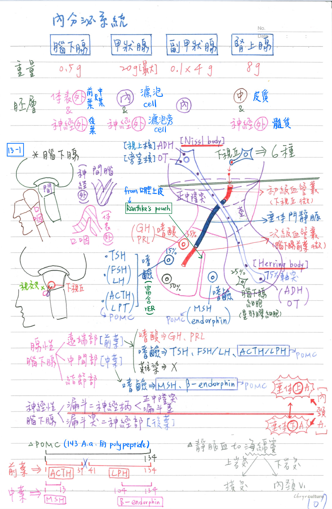
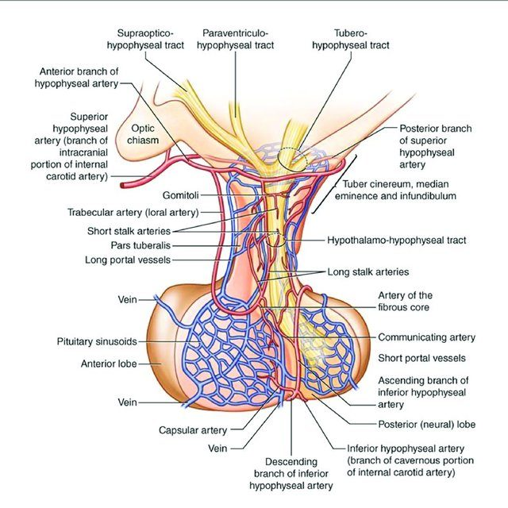
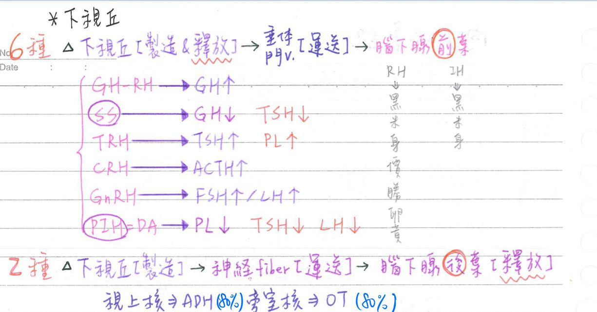
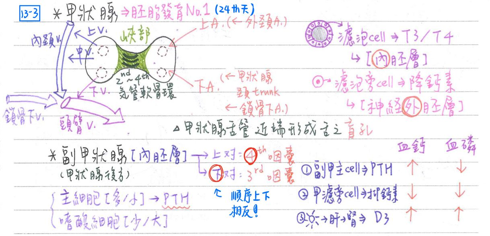
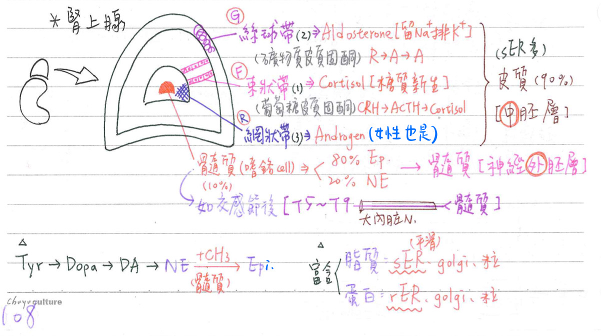

🌍 內分泌系統 [這邊何宣生理應該都有講過~]
腦下腺(pitutary gland=hypophysis)
- 一般性質：
- 位置：位於蝶骨之蝶鞍[=土耳其鞍(sella turcica]=腦垂體窩]之上，視交叉(optic chiasma)之下
- 有主腺之稱
- 大小：0.5gm；13 x 10 x 6mm
腺性腦下腺(adenohypophysis)：源自體表外胚層(surface ectoderm) & 源自口腔上皮之Ranthke's pouch
- 前葉(anterior lobe)=遠端部(pars distalis)
- 嗜酸細胞(acidophils, 35%)：分泌胜肽類激素(GH、PRL)
- 親體細胞(somatotropic cell)：分泌生長激素(GH)
- 親乳細胞(mammotropic cell)：分泌泌乳激素(PRL)
- 嗜鹼細胞(basophilis, 15%)：富含rER
- 親甲狀腺細胞(thyrotropic cell)：甲狀腺刺激素(TSH)
- 親生殖腺細胞(gonadotropic cell)：濾泡刺激素(FSH)、黃體生成素(LH)
- TSH、FSH、LH：為α、β兩次單位構成之糖蛋白類激素
- 親皮質細胞(corticotropic cell)：POMC(pro-opiomelanocortin)→
腎上腺皮質刺激素(ACTH)、脂滋養素(β-LPH, lipotrophic hormone)
- 難染細胞(chromophobes, 50%)：
- 少分泌顆粒細胞(few secretory granule)：ACTH
- 無分泌顆粒細胞(no secretory granule)：未分化细胞、支持細胞
- 嗜酸細胞(acidophils, 35%)：分泌胜肽類激素(GH、PRL)
- 中葉[嗜鹼]=中間部(pars intermedia)：POMC(pro-opiomelanocortin)
→α & β-endorphin(內生性嗎啡)、MSH(黑色素細胞刺激素)- 中葉以Ranthke's pouch與前葉相隔
- 結節部(pas tuberalis)：環繞神經柄(neural stalk)
神經性腦下腺(neurophysis)：源自間腦神經外胚層(neuroectoderm)
- 後葉(post.lobe)=神經部(pars nervosa)=漏斗突(infundibular process)：
- 75%為無髓鞘之神經纖維(軸突)，內含分泌顆粒，釋放(非製造)：
- 抗利尿激素(ADH)=血管壓力素(vasopressin)
- 催產激素(oxytosin)
- 該神經細胞本體(富含Nissl body)位於間腦之下視丘：
視上核製造ADH為主；室旁核製造oxytosin為主 - ★赫氏體(Herring body)：軸突內大量分泌顆粒聚集形成；位於後葉神經部的神經末梢
- ADH、oxytosin：為具9個氨基酸之胜肽類激素
- 25%為神經膠細胞=腦下腺細胞(Pituicyte)
- 75%為無髓鞘之神經纖維(軸突)，內含分泌顆粒，釋放(非製造)：
- 漏斗(infundibulum)=神經柄(neural stalk)：
- 漏斗幹(stem)=漏斗莖
- 中央隆起(median eminence)=正中隆突
- 腦下腺以漏斗(神經柄)與下視丘之結節區(tuberal region)相連
- 漏斗(神經柄)之前方具垂體門靜脈；其後方含神經纖維
腦下腺-血液供應
- 垂體上A、垂體下A：均源自內頸A，其靜脈血先引流至海綿竇(cavernous sinus)，再至體循環
- 垂體上動脈(sup. hypophyseal a)：支配漏斗&腺性腦下腺
- 於漏斗之中央隆起(median eminence)形成初級微血管叢(primary capillary plexus)
- 再經垂體門靜脈(hypophyseal portal system)注入位於腺性腦下腺之次級微血管叢(secondary capillary plexus)
- 垂體下動脈(inf. hypophyseal a.)：支配後葉


下視丘(hypothalamus)
- 下視丘&腦下腺前葉經由血管連結：製造並釋放6種調節性激素，經垂體門靜脈運送→調節腦下腺前葉激素製造量
- 生長激素釋放激素(GRH)→GH上升
- 體制素(somatostatin, SS)→GH、TSH下降
- 甲狀腺刺激素釋放激素(TRH)→TSH、PRL上升
- 生殖腺刺激素釋放激素(GnRH)→LH、FSH上升
- 腎上腺皮質刺激素釋放激素(CRH)→ACTH上升
- 泌乳激素抑制激素(PIH=dopamine)→PRL、TSH、LH下降
- 下視丘激素分泌呈脈動型(pulsatile relese)，以增加腦下腺細胞對下視丘激素之敏感度
→防止腦下腺細胞發生向下調節現象(down-regulation of receptors)
- 下視丘與腦下腺後葉經由神經連結：
- 下視丘之視上核(→ADH)、旁室核(→oxytosin)可製造激素，經其神經纖維運送至腦下腺後葉，由腦下腺後葉釋放

甲狀腺(thyroid gland)
- 一般性質：甲狀腺重約20gm
- 構造：
- 左右兩葉(lobes)
- 峽部(isthmus)：位於氣管第2~4軟骨環之前
💡<review>喉：9塊軟骨；氣管：16-20個軟骨
- 甲狀腺包膜(thyroid capsule)：與氣管前筋膜(pretracheal fascia)在甲狀腺後方相連形成懸後韌帶(又稱 ligament of Berry)
- 構造：
甲狀腺-血液供應
- 動脈：
- 甲狀腺上A(←外頸A)
- 甲狀腺下A(←甲狀腺頸動脈幹←鎖骨下A)
- 靜脈：
- 甲狀腺上V、甲狀腺中V→內頸V
- ★甲狀腺下V→頭臂V
甲狀腺-發育
- 甲狀腺為胚胎時期第一個發育之內分泌腺 [受精後第24天]
- 由原始咽(primordialpharynx)向外凸出之甲狀腺憩室(thyroid diverticulum)發育
→向下降至前頸部，以甲狀腺舌管(thyroglossal duct)與舌相連- 甲狀腺舌管(thyroglossal duct)：近端形成舌之盲孔(foramen cecum；位於舌後1/3)，其餘退化
甲狀腺-細胞&功能
- 濾泡細胞(follicular cell)：位於膠體外圍，源自內胚層
- 分泌甲狀腺素
- 活性高呈柱狀；休息時呈扁平
- 濾泡旁細胞(parafollicular cell=C細胞)：源自外胚層
- 分泌抑鈣素(calcitonin, CT)=降鈣素=鈣張力素
- C細胞源自4th咽囊[=後鰓體(ultimobrachia lbody)]神經細胞，嗜銀染色
甲狀腺-甲狀腺素(T3, T4)製造
- 碘之擄獲(iodide trapping)：濾泡細胞用主動運輸將血漿中的I-運至細胞內
- 碘之氧化(oxidation)：利用甲狀腺過氧化酶(peroxidase)將I-→I
- 碘之有機化(organification)：於細胞膜表面之膠體中，甲狀腺球蛋白與碘結合形成單碘酪胺酸(MIT)及雙碘酪胺酸(DIT)
- 甲狀腺球蛋白(thyroglobulin)：由濾泡細胞製造，富含酪胺酸(tyrosine)
- 偶合(coupling)=聚合(condensation):
- MIT+DIT→T3(3,5,3)
- DIT+DIT→T4(3,5,3',5')
- DIT+MIT→RT3(3,3',5';反式T3)
- 產量：T4>T3>RT3
- 活性：T3>T4>RT3
- 釋出(secretion)：
- 濾泡細胞將部份膠體經胞飲作用(pinocytosis)攝入細胞內→
- 由★[106-1]溶酶體(lysosome)將T3,T4從碘化甲狀腺球蛋白分離出來
→再以胞吐作用(exocytosis)分泌出去
- 甲狀腺素製造(偶和)和貯存的場所：為濾泡中的膠體；但其原料(碘&甲狀腺球蛋白)則由濾泡細胞提供

甲狀腺-鄰近神經
- 甲狀腺鄰近：返喉N、上喉N(→內/外喉N)、頸襻N
- 甲狀腺切除術：最易損及返喉N，，次易損及上喉N
- 甲狀腺手術時，少數為求外側視野清楚需横斷胸骨舌骨肌&胸骨甲狀肌時
→盡可能橫斷在高位，以免損及其支配神經(頸襻N)
- 甲狀腺手術時，少數為求外側視野清楚需横斷胸骨舌骨肌&胸骨甲狀肌時
- 結紮甲狀腺上A：易損及內喉N(外喉N也有可能受損)
副甲狀腺(parathyroid gland)
- 構造：源自内胚層，共100~400Mg
- 一般共4個(佔85〜95%)，但少數3或5個(佔5~15%)
- 上對(源自第四咽囊)：由甲狀腺下A或甲狀腺上A支配
- 下對(源自第三咽囊)：由甲狀腺下A支配
💡反直覺考點：上下對跟發育自哪個咽囊是相反的！ [EX：上對是來自第四不是第三咽囊]
- 一般位於甲狀腺的後方，但少數在胸腺或甲狀腺內
- 第5個副甲狀腺以位於胸腺內(intrathymus)最多
- 內部細胞：
- 主細胞(chief cell)：數目較多，體積較小，分泌副甲狀腺素(PTH)
- 嗜酸細胞(oxyphil cell)：數目較少，體積較大，富含嗜酸性之粒線體。功能未詳
- 一般共4個(佔85〜95%)，但少數3或5個(佔5~15%)
調節血鈣、血磷的激素
- 副甲狀腺素(PTH)：血鈣↑、血磷↓ [←副甲狀腺主細胞]
- 抑鈣素(CT)：血鈣↓、血磷↓ [←甲狀腺濾泡旁細胞]
- Vit. D3：血鈣↑、血磷↑ [←腎 ←肝 ←皮膚]
腎上腺(adrenal gland)
- 位置：位於腎臓內上方(腎筋膜內)；屬後腹膜器官；呈半月狀
- 大小：5cm x 1.5cm x 0.5cm；4~5gm/個[兩個共8~10gm]
腎上腺-組織
- 皮質：在外(源自中胚層)；佔90%重量；呈黃色
- 外層：絲球帶(zona glomerulosa)；佔15%體積(外觀最薄)
- 分泌：礦物皮質固酮(mineralocorticoid)
- 以醛固酮(aldosterone)為主
- 受R-A-A system調控：
腎素(renin)→血管張力素(angiotensin)→醛固酮(aldosterone)
- 分泌：礦物皮質固酮(mineralocorticoid)
- 中層：束狀帶(zona fasciculata)；80%體積(最厚)
- 分泌：葡萄糖皮質固醇(glucocorticoid)
- 以皮質醇(cortisol)為主
- 受 CRH-ACTH-cortisol調控：
CRH(下視丘)→ACTH(腦下腺前葉)→皮質醇(cortisol)
- 分泌：葡萄糖皮質固醇(glucocorticoid)
- 內層：網狀帶(zona reticularis)；佔5%體積(最小)
- 分泌：性激素
- 以雄性素(androgen)]為主→女性陰毛腋毛發育&性慾
- 分泌：性激素
- 腎上腺皮質細胞：製造類固醇激素(steroid)，特色為：
- 含多量之平滑型內質網(sER)、粒線體、高基氏體、脂肪滴
→細胞質呈嗜酸性 - 腎上腺在胎齡6th週時開始發育，出生時絲球帶&束狀帶已完備，但網狀帶至3歲後才可辨識
- 含多量之平滑型內質網(sER)、粒線體、高基氏體、脂肪滴
- 外層：絲球帶(zona glomerulosa)；佔15%體積(外觀最薄)
- 髓質：在內(源自外胚層)；佔10%重量；呈紅褐色
- 嗜鉻細胞(chromaffin cell)：分泌腎上腺素(80%)、正腎上腺素(20%)
- 呈嗜鹼性，細胞質含多量之分泌顆粒(內儲存著激素)
- 與交感神經節後神經元胚胎來源相同
- 均由外胚層之神經嵴(neural crest)所衍生
- 均接受交感神經節前神經元(末梢釋出Ach)的刺激
- 神經內分泌細胞(neuroendocrine cell) <cf 3-3>
= APUD (amine precursor uptake & decarboxylation)
=DNES(diffuse neuroendocrine system)
=嗜銀細胞(argentaffin cell =argyrophil cell)
- 嗜鉻細胞(chromaffin cell)：分泌腎上腺素(80%)、正腎上腺素(20%)

腎上腺-血液供應
- 腎上腺動脈：
- 上腎上腺A(←下膈A)
- 中腎上腺A(←腹主A)
- 下腎上腺A(←腎A)
- 腎上腺靜脈：
- 右腎上腺V→下腔靜脈
- 左腎上腺V→左腎V